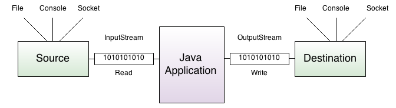

Java IO
Отличительной чертой многих языков программирования является работа с файлами и потоками. В Java основной функционал работы с потоками сосредоточен в классах из пакета java.io.
Ключевым понятием здесь является понятие потока. Хотя понятие "поток" в программировании довольно перегружено и может обозначать множество различных концепций. В данном случае применительно к работе с файлами и вводом-выводом будет говориться о потоке (stream), как об абстракции, которая используется для чтения или записи информации (файлов, сокетов, текста консоли и т.д.).
Поток связан с реальным физическим устройством с помощью системы ввода-вывода Java. Может быть определен поток, который связан с файлом и через который можно вести чтение или запись файла. Это также может быть поток, связанный с сетевым сокетом, с помощью которого можно получить или отправить данные в сети. Все эти задачи: чтение и запись различных файлов, обмен информацией по сети, ввод-ввывод в консоли решаются в Java с помощью потоков.

Объект, из которого можно считать данные, называется потоком ввода, а объект, в который можно записывать данные, - потоком вывода. Например, если надо считать содержание файла, то применяется поток ввода, а если надо записать в файл - то поток вывода.
В основе всех классов, управляющих потоками байтов, находятся два абстрактных класса: InputStream (представляющий потоки ввода) и OutputStream (представляющий потоки вывода)
Но поскольку работать с байтами не очень удобно, то для работы с потоками символов были добавлены абстрактные классы Reader (для чтения потоков символов) и Writer (для записи потоков символов).
Все остальные классы, работающие с потоками, являются наследниками этих абстрактных классов. Основные классы потоков:
Byte Based:
Type |
Input |
Output |
Basic |
InputStream |
OutputStream |
Arrays |
ByteArrayInputStream |
ByteArrayOutputStream |
Files |
FileInputStream |
FileOutputStream |
Files |
RandomAccessFile |
RandomAccessFile |
Pipes |
PipedInputStream |
PipedOutputStream |
Buffering |
BufferedInputStream |
BufferedOutputStream |
Filtering |
FilterInputStream |
FilterOutputStream |
Parsing |
PushbackInputStream |
|
Parsing |
StreamTokenizer |
|
Data |
DataInputStream |
DataOutputStream |
Data-Formatted |
PrintStream |
|
Objects |
ObjectInputStream |
ObjectOutputStream |
Utilities |
SequenceInputStream |
Character Based:
Type |
Input |
Output |
Basic |
Reader |
Writer |
Basic |
InputStreamReader |
OutputStreamWriter |
Arrays |
CharArrayReader |
CharArrayWriter |
Files |
FileReader |
FileWriter |
Pipes |
PipedReader |
PipedWriter |
Buffering |
BufferedReader |
BufferedWriter |
Filtering |
FilterReader |
FilterWriter |
Parsing |
PushbackReader |
|
Parsing |
LineNumberReader |
|
Strings |
StringReader |
StringWriter |
Data-Formatted |
PrintWriter |
Абстрактный класс InputStream
Класс InputStream является базовым для всех классов, управляющих байтовыми потоками ввода. Рассмотрим его основные методы:
-
int available()возвращает количество байтов, доступных для чтения в потоке -
void close()закрывает поток -
int read()возвращает целочисленное представление следующего байта в потоке. Когда в потоке не останется доступных для чтения байтов, данный метод возвратит число-1 -
int read(byte[] buffer)считывает байты из потока в массивbuffer. После чтения возвращает число считанных байтов. Если ни одного байта не было считано, то возвращается число-1 -
int read(byte[] buffer, int offset, int length)считывает некоторое количество байтов, равноеlength, из потока в массивbuffer. При этом считанные байты помещаются в массиве, начиная со смещенияoffset, то есть с элементаbuffer[offset]. Метод возвращает число успешно прочитанных байтов. -
long skip(long number)пропускает в потоке при чтении некоторое количество байт, которое равноnumber
Абстрактный класс OutputStream
Класс OutputStream является базовым классом для всех классов, которые работают с бинарными потоками записи. Свою функциональность он реализует через следующие методы:
-
void close()закрывает поток -
void flush()очищает буфер вывода, записывая все его содержимое -
void write(int b)записывает в выходной поток один байт, который представлен целочисленным параметромb -
void write(byte[] buffer)записывает в выходной поток массив байтовbuffer -
void write(byte[] buffer, int offset, int length)записывает в выходной поток некоторое число байтов, равноеlength, из массиваbuffer, начиная со смещенияoffset, то есть с элементаbuffer[offset]
Абстрактный класс Reader
Абстрактный класс Reader предоставляет функционал для чтения текстовой информации. Рассмотрим его основные методы:
-
absract void close()закрывает поток ввода -
int read()возвращает целочисленное представление следующего символа в потоке. Если таких символов нет, и достигнут конец файла, то возвращается число-1 -
int read(char[] buffer)считывает в массивbufferиз потока символы, количество которых равно длине массиваbuffer. Возвращает количество успешно считанных символов. При достижении конца файла возвращает-1 -
int read(CharBuffer buffer)считывает в объектCharBufferиз потока символы. Возвращает количество успешно считанных символов. При достижении конца файла возвращает-1 -
absract int read(char[] buffer, int offset, int count)считывает в массивbuffer, начиная со смещенияoffset, из потока символы, количество которых равноcount -
long skip(long count)пропускает количество символов, равноеcount. Возвращает число успешно пропущенных символов
Абстрактный класс Writer
Класс Writer определяет функционал для всех символьных потоков вывода. Его основные методы:
-
Writer append(char c)добавляет в конец выходного потока символc. Возвращает объектWriter -
Writer append(CharSequence chars)добавляет в конец выходного потока набор символовchars. Возвращает объектWriter -
abstract void close()закрывает поток -
abstract void flush()очищает буферы потока -
void write(int c)записывает в поток один символ, который имеет целочисленное представление -
void write(char[] buffer)записывает в поток массив символов -
absract void write(char[] buffer, int off, int len) ` записывает в поток только несколько символов из массива `buffer. Причем количество символов равноlen, а отбор символов из массива начинается с индексаoff -
void write(String str)записывает в поток строку -
void write(String str, int off, int len)записывает в поток из строки некоторое количество символов, которое равноlen, причем отбор символов из строки начинается с индексаoff
Интерфейс Closeable
При завершении работы с потоком его надо закрыть с помощью метода close(), который определен в интерфейсе Closeable. Метод close имеет следующее определение:
void close() throws IOExceptionЭтот интерфейс уже реализуется в классах InputStream и OutputStream, а через них и во всех классах потоков.
При закрытии потока освобождаются все выделенные для него ресурсы, например, файл. В случае, если поток окажется не закрыт, может происходить утечка памяти.
Есть два способа закрытия файла:
-
использование блока
try..catch..finally -
использование конструкции
try-with-resource
Используем первый (традиционный) способ и считаем данные из файла:
import java.io.FileInputStream;
import java.io.IOException;
public class Program {
public static void main(String[] args) {
FileInputStream fin = null;
try {
fin = new FileInputStream("C://SomeDir//notes.txt");
int i = -1;
while ((i = fin.read()) != -1) {
System.out.print((char) i);
}
} catch (IOException ex) {
System.out.println(ex.getMessage());
} finally {
try {
if (fin != null)
fin.close();
} catch (IOException ex) {
System.out.println(ex.getMessage());
}
}
}
}Поскольку при открытии или считывании файла может произойти ошибка ввода-вывода, то код считывания помещается в блок try. И чтобы быть уверенным, что поток в любом случае закроется, даже если при работе с ним возникнет ошибка, вызов метода close() помещается в блок finally. И, так как метод close() также в случае ошибки может генерировать исключение IOException, то его вызов также помещается во вложенный блок try..catch.
Начиная с Java 7 можно использовать второй способ, который автоматически вызывает метод close. Этот способ заключается в использовании конструкции try-with-resources (try с ресурсами). Данная конструкция работает с объектами, которые реализуют интерфейс AutoCloseable. Так как все классы потоков реализуют интерфейс Closeable, который в свою очередь наследуется от AutoCloseable, то их также можно использовать в данной конструкции.
Предыдущий пример с использованием конструкции try-with-resources:
import java.io.FileInputStream;
import java.io.IOException;
public class Program {
public static void main(String[] args) {
try (FileInputStream fin = new FileInputStream("C://SomeDir//notes.txt")) {
int i = -1;
while ((i = fin.read()) != -1) {
System.out.print((char) i);
}
} catch (IOException ex) {
System.out.println(ex.getMessage());
}
}
}Синтаксис конструкции следующий:
try(название_класса имя_переменной = конструктор_класса) {
// code
}Данная конструкция также не исключает использования блоков catch.
После окончания работы в блоке try у ресурса (в данном случае у объекта FileInputStream) автоматически вызывается метод close().
Если нам надо использовать несколько потоков, которые после выполнения надо закрыть, то мы можем указать объекты потоков через точку с запятой:
try (FileInputStream fin = new FileInputStream("C://SomeDir//Hello.txt");
FileOutputStream fos = new FileOutputStream("C://SomeDir//Hello2.txt")) {
}Класс File
Класс File, определенный в пакете java.io, не работает напрямую с потоками. Его задачей является управление информацией о файлах и директориях. Хотя на уровне операционной системы файлы и директории отличаются, но в Java они описываются одним классом File.
В зависимости от того, что должен представлять объект File - файл или директория, мы можем использовать один из конструкторов для создания объекта:
-
File(String путь_к_директории) -
File(String путь_к_директории, String имя_файла) -
File(File каталог, String имя_файла)
Например:
// создаем объект File для директории
File dir1 = new File("C://SomeDir");
// создаем объекты для файлов, которые находятся в директории
File file1 = new File("C://SomeDir", "Hello.txt");
File file2 = new File(dir1, "Hello2.txt");Класс File имеет ряд методов, которые позволяют управлять файлами и директориями. Рассмотрим некоторые из них:
-
boolean createNewFile()создает новый файл по пути, который передан в конструктор. В случае удачного создания возвращаетtrue, иначеfalse -
boolean delete()удаляет директорию или файл по пути, который передан в конструктор. При удачном удалении возвращаетtrue -
boolean exists()проверяет, существует ли по указанному в конструкторе пути файл или директория. И если файл или директория существует, то возвращаетtrue, иначе возвращаетfalse -
String getAbsolutePath()возвращает абсолютный путь для пути, переданного в конструктор объекта -
String getName()возвращает краткое имя файла или директории -
String getParent()возвращает имя родительской директории -
boolean isDirectory()возвращает значениеtrue, если по указанному пути располагается директория -
boolean isFile()возвращает значениеtrue, если по указанному пути находится файл -
boolean isHidden()возвращает значениеtrue, если директория или файл являются скрытыми -
long length()возвращает размер файла в байтах -
long lastModified()возвращает время последнего изменения файла или директории. Значение представляет количество миллисекунд, прошедших с начала эпохи Unix -
String[] list()возвращает массив файлов и поддиректорий, которые находятся в определенной директории -
File[] listFiles()возвращает массив файлов и поддиректорий, которые находятся в определенной директории -
boolean mkdir()создает новую директорию и при удачном создании возвращает значениеtrue -
boolean renameTo(File dest)переименовывает файл или директорию
Работа с директориями
Если объект File представляет директорию, то его метод isDirectory() возвращает true. И поэтому мы можем получить ее содержимое - вложенные поддиректории и файлы с помощью методов list() и listFiles(). Получим все поддиректории и файлы в определенной директории:
import java.io.File;
public class Program {
public static void main(String[] args) {
// определяем объект для каталога
File dir = new File("C://SomeDir");
// если объект представляет каталог
if (dir.isDirectory()) {
// получаем все вложенные объекты в каталоге
for (File item : dir.listFiles()) {
if (item.isDirectory()) {
System.out.println(item.getName() + " \t folder");
} else {
System.out.println(item.getName() + "\t file");
}
}
}
}
}Теперь выполним еще ряд операций с директорией, как удаление, переименование и создание:
import java.io.File;
public class Program {
public static void main(String[] args) {
// определяем объект для каталога
File dir = new File("C://SomeDir//NewDir");
boolean created = dir.mkdir();
if (created) {
System.out.println("Folder has been created");
}
// переименуем каталог
File newDir = new File("C://SomeDir//NewDirRenamed");
dir.renameTo(newDir);
// удалим каталог
boolean deleted = newDir.delete();
if (deleted) {
System.out.println("Folder has been deleted");
}
}
}Работа с файлами
Работа с файлами аналогична работе с директориями. Например, получим данные по одному из файлов и создадим еще один файл:
import java.io.File;
import java.io.IOException;
public class Program {
public static void main(String[] args) {
// определяем объект для каталога
File myFile = new File("C://SomeDir//notes.txt");
System.out.println("File name: " + myFile.getName());
System.out.println("Parent folder: " + myFile.getParent());
if (myFile.exists()) {
System.out.println("File exists");
} else {
System.out.println("File not found");
}
System.out.println("File size: " + myFile.length());
if (myFile.canRead()) {
System.out.println("File can be read");
} else {
System.out.println("File can not be read");
}
if (myFile.canWrite()) {
System.out.println("File can be written");
} else {
System.out.println("File can not be written");
}
// создадим новый файл
File newFile = new File("C://SomeDir//MyFile");
try {
boolean created = newFile.createNewFile();
if (created) {
System.out.println("File has been created");
}
} catch (IOException ex) {
System.out.println(ex.getMessage());
}
}
}При создании нового файла метод createNewFile() в случае неудачи выбрасывает исключение IOException, поэтому нам надо его отлавливать, например, в блоке try…catch, как делается в примере выше.
Классы FileOutputStream и FileInputStream
Запись файлов и класс FileOutputStream
Класс FileOutputStream предназначен для записи байтов в файл. Он является производным от класса OutputStream, поэтому наследует всю его функциональность.
Через конструктор класса FileOutputStream задается файл, в который производится запись. Класс поддерживает несколько конструкторов:
-
FileOutputStream(String filePath) -
FileOutputStream(File fileObj) -
FileOutputStream(String filePath, boolean append) -
FileOutputStream(File fileObj, boolean append)
Файл задается либо через строковый путь, либо через объект File. Второй параметр - append задает способ записи: eсли он равен true, то данные дозаписываются в конец файла, а при false - файл полностью перезаписывается
Например, запишем в файл строку:
import java.io.FileOutputStream;
import java.io.IOException;
public class Program {
public static void main(String[] args) {
String text = "Hello world!"; // строка для записи
try (FileOutputStream fos = new FileOutputStream("C://SomeDir//notes.txt")) {
byte[] buffer = text.getBytes(); // перевод строки в байты
fos.write(buffer, 0, buffer.length);
} catch (IOException ex) {
System.out.println(ex.getMessage());
}
System.out.println("The file has been written");
}
}Для создания объекта FileOutputStream используется конструктор, принимающий в качестве параметра путь к файлу для записи. Если такого файла нет, то он автоматически создается при записи. Так как здесь записываем строку, то ее надо сначала перевести в массив байтов. И с помощью метода write() строка записывается в файл.
Для автоматического закрытия файла и освобождения ресурса объект FileOutputStream создается с помощью конструктции try…catch.
При этом необязательно записывать весь массив байтов. Используя перегрузку метода write(), можно записать и одиночный байт:
fos.write(buffer[0]); // запись первого байтаЧтение файлов и класс FileInputStream
Для считывания данных из файла предназначен класс FileInputStream, который является наследником класса InputStream и поэтому реализует все его методы.
Для создания объекта FileInputStream мы можем использовать ряд конструкторов:
-
FileInputStream(File file)открывает соединение с файлом,fileявляетсяObjectтипаFileк считываемому файлу -
FileInputStream(FileDescriptor fdObj)используя файловый дескрипторfdObj, который представляет существующее соединение с файлом в файловой системе -
FileInputStream(String name)открывает соединение с файлом,nameявляется путем к считываемому файлу
Если файл не может быть открыт, например, по указанному пути такого файла не существует, то генерируется исключение FileNotFoundException.
Считаем данные из ранее записанного файла и выведем на консоль:
import java.io.FileInputStream;
import java.io.IOException;
public class Program {
public static void main(String[] args) {
try (FileInputStream fin = new FileInputStream("C://SomeDir//notes.txt")) {
System.out.printf("File size: %d bytes \n", fin.available());
int i = -1;
while ((i = fin.read()) != -1) {
System.out.print((char) i);
}
} catch (IOException ex) {
System.out.println(ex.getMessage());
}
}
}В данном случае мы считываем каждый отдельный байт в переменную i:
while ((i = fin.read()) != -1) {
}Когда в потоке больше нет данных для чтения, метод возвращает число -1.
Затем каждый считанный байт конвертируется в объект типа char и выводится на консоль.
Подобным образом можно считать данные в массив байтов и затем производить с ним манипуляции:
byte[] buffer = new byte[fin.available()]; // считаем файл в буфер
fin.read(buffer, 0, fin.available());
System.out.println("File data:");
for (int i = 0; i < buffer.length; i++) {
System.out.print((char) buffer[i]);
}Совместим оба класса и выполним чтение из одного и запись в другой файл:
import java.io.FileInputStream;
import java.io.FileOutputStream;
import java.io.IOException;
public class Program {
public static void main(String[] args) {
try (FileInputStream fin = new FileInputStream("C://SomeDir//notes.txt");
FileOutputStream fos = new FileOutputStream("C://SomeDir//notes_new.txt")) {
byte[] buffer = new byte[fin.available()]; // считываем буфер
fin.read(buffer, 0, buffer.length); // записываем из буфера в файл
fos.write(buffer, 0, buffer.length);
} catch (IOException ex) {
System.out.println(ex.getMessage());
}
}
}Классы FileInputStream и FileOutputStream предназначены прежде всего для записи двоичных файлов, то есть для записи и чтения байтов. И хотя они также могут использоваться для работы с текстовыми файлами, но все же для этой задачи больше подходят другие классы.
Классы ByteArrayInputStream и ByteArrayOutputStream
Для работы с массивами байтов - их чтения и записи используются классы ByteArrayInputStream и ByteArrayOutputStream.
Чтение массива байтов и класс ByteArrayInputStream
Класс ByteArrayInputStream представляет входной поток, использующий в качестве источника данных массив байтов. Он имеет следующие конструкторы:
-
ByteArrayInputStream(byte[] buf) -
ByteArrayInputStream(byte[] buf, int offset, int length)
В качестве параметров конструкторы используют массив байтов buf, из которого производится считывание, смещение относительно начала массива offset и количество считываемых символов length.
Считаем массив байтов и выведем его на экран:
import java.io.ByteArrayInputStream;
public class Program {
public static void main(String[] args) {
byte[] array1 = new byte[] {1, 3, 5, 7};
ByteArrayInputStream byteStream1 = new ByteArrayInputStream(array1);
int b;
while ((b = byteStream1.read()) != -1) {
System.out.println(b);
}
String text = "Hello world!";
byte[] array2 = text.getBytes();
ByteArrayInputStream byteStream2 = new ByteArrayInputStream(array2, 0, 5); // считываем 5 символов
int c;
while ((c = byteStream2.read()) != -1) {
System.out.println((char) c);
}
}
}В отличие от других классов потоков для закрытия объекта ByteArrayInputStream не требуется вызывать метод close().
Запись массива байт и класс ByteArrayOutputStream
Класс ByteArrayOutputStream представляет поток вывода, использующий массив байтов в качестве места вывода.
Чтобы создать объект данного класса, мы можем использовать один из его конструкторов:
-
ByteArrayOutputStream() -
ByteArrayOutputStream(int size)
Первая версия создает массив для хранения байтов длиной в 32 байта, а вторая версия создает массив длиной size.
Рассмотрим применение класса:
import java.io.ByteArrayOutputStream;
public class Program {
public static void main(String[] args) {
ByteArrayOutputStream baos = new ByteArrayOutputStream();
String text = "Hello Wolrd!";
byte[] buffer = text.getBytes();
try {
baos.write(buffer);
} catch (Exception ex) {
System.out.println(ex.getMessage());
}
System.out.println(baos.toString()); // превращаем массив байтов в строку
byte[] array = baos.toByteArray(); // получаем массив байтов и выводим по символьно
for (byte b : array) {
System.out.print((char) b);
}
System.out.println();
}
}Как и в других потоках вывода в классе ByteArrayOutputStream определен метод write(), который записывает в поток некоторые данные. В данном случае мы записываем в поток массив байтов. Этот массив байтов записывается в объекте ByteArrayOutputStream в защищенное поле buf, которое представляет также массив байтов (protected byte[] buf).
Так как метод write() может сгенерировать исключение, то вызов этого метода помещается в блок try…catch.
Используя методы toString() и toByteArray(), можно получить массив байтов buf в виде текста или непосредственно в виде массива байт.
С помощью метода writeTo() мы можем вывести массив байт в другой поток. Данный метод в качестве параметра принимает объект OutputStream, в который производится запись массива байт:
ByteArrayOutputStream baos = new ByteArrayOutputStream();
String text = "Hello Wolrd!";
byte[] buffer = text.getBytes();
try {
baos.write(buffer);
} catch (Exception ex) {
System.out.println(ex.getMessage());
}
try (FileOutputStream fos = new FileOutputStream("hello.txt")) {
baos.writeTo(fos);
} catch (IOException e) {
System.out.println(e.getMessage());
}После выполнения этой программы в папке с программой появится файл hello.txt, который будет содержать строку Hello Wolrd!.
И в заключении также надо сказать, что как и для объектов ByteArrayInputStream, для ByteArrayOutputStream не надо явным образом закрывать поток с помощью метода close().
Классы BufferedInputStream and BufferedOutputStream
Для оптимизации операций ввода-вывода используются буферизуемые потоки. Эти потоки добавляют к стандартным специальный буфер в памяти, с помощью которого повышается производительность при чтении и записи потоков.
Класс BufferedInputStream
Класс BufferedInputStream накапливает вводимые данные в специальном буфере без постоянного обращения к устройству ввода. Класс BufferedInputStream определяет два конструктора:
-
BufferedInputStream(InputStream inputStream) -
BufferedInputStream(InputStream inputStream, int bufSize)
Первый параметр - это поток ввода, с которого данные будут считываться в буфер. Второй параметр - размер буфера.
Например, буферизируем считывание данных из потока ByteArrayInputStream:
import java.io.BufferedInputStream;
import java.io.ByteArrayInputStream;
public class Program {
public static void main(String[] args) {
String text = "Hello world!";
byte[] buffer = text.getBytes();
ByteArrayInputStream in = new ByteArrayInputStream(buffer);
try (BufferedInputStream bis = new BufferedInputStream(in)) {
int c;
while ((c = bis.read()) != -1) {
System.out.print((char) c);
}
} catch (Exception e) {
System.out.println(e.getMessage());
}
System.out.println();
}
}Класс BufferedInputStream в конструкторе принимает объект InputStream. В данном случае таким объектом является экземпляр класса ByteArrayInputStream.
Как и все потоки ввода BufferedInputStream обладает методом read(), который считывает данные. И здесь мы считываем с помощью метода read() каждый байт из массива buffer.
Фактические все то же самое можно было сделать и с помощью одного ByteArrayInputStream, не прибегая к буферизированному потоку. Класс BufferedInputStream просто оптимизирует производительность при работе с потоком ByteArrayInputStream. Естественно вместо ByteArrayInputStream может использоваться любой другой класс, который унаследован от InputStream.
Класс BufferedOutputStream
Класс BufferedOutputStream аналогично создает буфер для потоков вывода. Этот буфер накапливает выводимые байты без постоянного обращения к устройству. И когда буфер заполнен, производится запись данных.
BufferedOutputStream определяет два конструктора:
- BufferedOutputStream(OutputStream outputStream)
- BufferedOutputStream(OutputStream outputStream, int bufSize)
outputStream - это поток вывода, который унаследован от OutputStream, а bufSize - размер буфера.
Рассмотрим на примере записи в файл:
import java.io.BufferedOutputStream;
import java.io.FileOutputStream;
import java.io.IOException;
public class Program {
public static void main(String[] args) {
String text = "Hello world!"; // строка для записи
try (FileOutputStream out = new FileOutputStream("notes.txt");
BufferedOutputStream bos = new BufferedOutputStream(out)) {
byte[] buffer = text.getBytes(); // перевод строки в байты
bos.write(buffer, 0, buffer.length);
} catch (IOException ex) {
System.out.println(ex.getMessage());
}
}
}Класс BufferedOutputStream в конструкторе принимает в качестве параметра объект OutputStream - в данном случае это файловый поток вывода FileOutputStream. И также производится запись в файл. Опять же BufferedOutputStream не добавляет много новой функциональности, он просто оптимизирует действие потока вывода.
Классы DataOutputStream и DataInputStream
Классы DataOutputStream и DataInputStream позволяют записывать и считывать данные примитивных типов.
Запись данных и DataOutputStream
Класс DataOutputStream представляет поток вывода и предназначен для записи данных примитивных типов. Для записи каждого из примитивных типов предназначен свой метод:
-
writeBoolean(boolean v)записывает в поток булевое однобайтовое значение -
writeByte(int v)записывает в поток 1 байт, которые представлен в виде целочисленного значения -
writeChar(int v)записывает 2-байтовое значениеchar -
writeDouble(double v)записывает в поток 8-байтовое значениеdouble -
writeFloat(float v)записывает в поток 4-байтовое значениеfloat -
writeInt(int v)записывает в поток целочисленное значениеint -
writeLong(long v)записывает в поток значениеlong -
writeShort(int v)записывает в поток значениеshort -
writeUTF(String str)записывает в поток строку в кодировкеUTF-8
Считывание данных и DataInputStream
Класс DataInputStream действует противоположным образом - он считывает из потока данные примитивных типов. Соответственно для каждого примитивного типа определен свой метод для считывания:
-
boolean readBoolean()считывает из потока булевое однобайтовое значение -
byte readByte()считывает из потока 1 байт -
char readChar()считывает из потока значениеchar -
double readDouble()считывает из потока 8-байтовое значениеdouble -
float readFloat()считывает из потока 4-байтовое значениеfloat -
int readInt()считывает из потока целочисленное значениеint -
long readLong()считывает из потока значениеlong -
short readShort()считывает значениеshort -
String readUTF()считывает из потока строку в кодировкеUTF-8 -
int skipBytes(int n)пропускает при чтении из потока n байтов
Рассмотрим применение классов на примере:
import java.io.*;
public class Program {
public static void main(String[] args) {
Person tom = new Person("Tom", 34, 1.68, false);
// запись в файл
try (DataOutputStream dos = new DataOutputStream(new FileOutputStream("data.bin"))) {
dos.writeUTF(tom.name);
dos.writeInt(tom.age);
dos.writeDouble(tom.height);
dos.writeBoolean(tom.married);
System.out.println("File has been written");
} catch (IOException ex) {
System.out.println(ex.getMessage());
}
// обратное считывание из файла
try (DataInputStream dos = new DataInputStream(new FileInputStream("data.bin"))) {
String name = dos.readUTF();
int age = dos.readInt();
double height = dos.readDouble();
boolean married = dos.readBoolean();
System.out.printf("Name: %s Age: %d Height: %f Married: %b", name, age, height, married);
} catch (IOException ex) {
System.out.println(ex.getMessage());
}
}
}class Person {
public String name;
public int age;
public double height;
public boolean married;
public Person(String n, int a, double h, boolean m) {
this.name = n;
this.height = h;
this.age = a;
this.married = m;
}
}Здесь мы последовательно записываем в файл данные объекта Person.
Объект DataOutputStream в конструкторе принимает поток вывода: DataOutputStream(OutputStream out). В данном случае в качестве потока вывода используется объект FileOutputStream, поэтому вывод будет происходить в файл. И с помощью выше рассмотренных методов типа writeUTF() производится запись значений в бинарный файл.
Затем происходит чтение ранее записанных данных. Объект DataInputStream в конструкторе принимает поток для чтения: DataInputStream(InputStream in). Здесь таким потоком выступает объект FileInputStream.
Классы PrintStream и PrintWriter
Класс PrintStream
Класс PrintStream - это именно тот класс, который используется для вывода на консоль. Когда мы выводим на консоль некоторую информацию с помощью вызова System.out.println(), то тем самым мы задействует PrintStream, так как переменная out в классе System как раз и представляет объект класса PrintStream, а метод println() - это метод класса PrintStream.
Но PrintStream полезен не только для вывода на консоль. Мы можем использовать данный класс для записи информации в поток вывода. Для этого PrintStream определяет ряд конструкторов:
-
PrintStream(OutputStream outputStream) -
PrintStream(OutputStream outputStream, boolean autoFlushingOn) -
PrintStream(OutputStream outputStream, boolean autoFlushingOn, String charSet) throws UnsupportedEncodingException -
PrintStream(File outputFile) throws FileNotFoundException -
PrintStream(File outputFile, String charSet) throws FileNotFoundException, UnsupportedEncodingException -
PrintStream(String outputFileName) throws FileNotFoundException -
PrintStream(String outputFileName, String charSet) throws FileNotFoundException, UnsupportedEncodingException
Параметр outputStream - это объект OutputStream, в который производится запись. Параметр autoFlushingOn при значении true позволяет автоматически записывать данные в поток вывода. По умолчанию этот параметр равен false. Параметр charSet позволяет указать кодировку символов.
В качестве источника для записи данных вместо OutputStream можно использовать объект File или строковый путь, по которому будет создаваться файл.
Для вывода информации в выходной поток PrintStream использует следующие методы:
-
println()вывод строковой информации с переводом строки -
print()вывод строковой информации без перевода строки -
printf()форматированный вывод
Например, запишем информацию в файл:
import java.io.FileOutputStream;
import java.io.IOException;
import java.io.PrintStream;
public class Program {
public static void main(String[] args) {
String text = "Привет мир!"; // строка для записи
try (FileOutputStream fos = new FileOutputStream("C://SomeDir//notes3.txt");
PrintStream printStream = new PrintStream(fos)) {
printStream.println(text);
System.out.println("Запись в файл произведена");
} catch (IOException ex) {
System.out.println(ex.getMessage());
}
}
}В данном случае применяется форма конструктора PrintStream, которая в качестве параметра принимает поток вывода: PrintStream (OutputStream out). Кроме того, мы могли бы использовать ряд других форм конструктора, например, указывая названия файла для записи: PrintStream (string filename)
В качестве потока вывода используется объект FileOutputStream. С помощью метода println() производится запись информации в выходной поток - то есть в объект FileOutputStream. (В случае с выводом на консоль с помощью System.out.println() в качестве потока вывода выступает консоль)
Кроме того, как и любой поток вывода и наследник класса OutputStream он имеет метод write():
import java.io.IOException;
import java.io.PrintStream;
public class Program {
public static void main(String[] args) {
try (PrintStream printStream = new PrintStream("notes3.txt")) {
printStream.print("Hello World!");
printStream.println("Welcome to Java!");
printStream.printf("Name: %s Age: %d \n", "Tom", 34);
String message = "PrintStream";
byte[] messageToBytes = message.getBytes();
printStream.write(messageToBytes);
System.out.println("The file has been written");
} catch (IOException ex) {
System.out.println(ex.getMessage());
}
}
}После выполнения этой программы получится файл со следующим содержанием:
Hello World!Welcome to Java!
Name: Tom Age: 34
PrintStreamPrintWriter
На PrintStream похож другой класс PrintWriter. Его можно использовать как для вывода информации на консоль, так и в файл или любой другой поток вывода. Данный класс имеет ряд конструкторов:
-
PrintWriter(File file)автоматически добавляет информацию в указанный файл -
PrintWriter(File file, String csn)автоматически добавляет информацию в указанный файл с учетом кодировкиcsn -
PrintWriter(OutputStream out)для вывода информации используется существующий объектOutputStream, автоматически сбрасывая в него данные -
PrintWriter(OutputStream out, boolean autoFlush)для вывода информации используется существующий объектOutputStream, второй параметр указывает, надо ли автоматически добавлять вOutputStreamданные -
PrintWriter(String fileName)автоматически добавляет информацию в файл по указанному имени -
PrintWriter(String fileName, String csn)автоматически добавляет информацию в файл по указанному имени, используя кодировкуcsn -
PrintWriter(Writer out)для вывода информации используется существующий объектWriter, в который автоматически идет запись данных -
PrintWriter(Writer out, boolean autoFlush)для вывода информации используется существующий объектWriter, второй параметр указывает, надо ли автоматически добавлять вWriterданные
PrintWriter реализует интерфейсы Appendable, Closable и Flushable, и поэтому после использования представляемый им поток надо закрывать.
Для записи данных в поток он также используется методы printf() и println().
Например, применим данный класс для вывода на консоль:
try (PrintWriter pw = new PrintWriter(System.out)) {
pw.println("Hello world!");
}В качестве потока вывода здесь применяется System.out, а на консоль будет выведена строка Hello world!
Класс FileWriter и FileReader
Хотя с помощью ранее рассмотренных классов можно записывать текст в файлы, однако они предназначены прежде всего для работы с бинарными потоками данных, и их возможностей для полноценной работы с текстовыми файлами недостаточно. И для этой цели служат совсем другие классы, которые являются наследниками абстрактных классов Reader и Writer.
Запись файлов. Класс FileWriter
Класс FileWriter является производным от класса Writer. Он используется для записи текстовых файлов.
Чтобы создать объект FileWriter, можно использовать один из следующих конструкторов:
-
FileWriter(File file) -
FileWriter(File file, boolean append) -
FileWriter(FileDescriptor fd) -
FileWriter(String fileName) -
`FileWriter(String fileName, boolean append) `
Так, в конструктор передается либо путь к файлу в виде строки, либо объект File, который ссылается на конкретный текстовый файл. Параметр append указывает, должны ли данные дозаписываться в конец файла (если параметр равен true), либо файл должен перезаписываться.
Запишем в файл какой-нибудь текст:
import java.io.FileWriter;
import java.io.IOException;
public class Program {
public static void main(String[] args) {
try (FileWriter writer = new FileWriter("notes3.txt", false)) {
String text = "Hello Gold!";
writer.write(text); // запись всей строки
writer.append('\n'); // запись одного символа
writer.append('E');
writer.flush();
} catch (IOException ex) {
System.out.println(ex.getMessage());
}
}
}В конструкторе использовался параметр append со значением false - то есть файл будет перезаписываться. Затем с помощью методов, определенных в базовом классе Writer производится запись данных.
Чтение файлов. Класс FileReader
Класс FileReader наследуется от абстрактного класса Reader и предоставляет функциональность для чтения текстовых файлов.
Для создания объекта FileReader мы можем использовать один из его конструкторов:
-
FileReader(String fileName) -
FileReader(File file) -
FileReader(FileDescriptor fd)
А используя методы, определенные в базом классе Reader, произвести чтение файла:
import java.io.FileReader;
import java.io.IOException;
public class Program {
public static void main(String[] args) {
try (FileReader reader = new FileReader("notes3.txt")) {
// читаем посимвольно
int c;
while ((c = reader.read()) != -1) {
System.out.print((char) c);
}
} catch (IOException ex) {
System.out.println(ex.getMessage());
}
}
}Также мы можем считывать в промежуточный буфер из массива символов:
import java.io.FileReader;
import java.io.IOException;
import java.util.Arrays;
public class Program {
public static void main(String[] args) {
try (FileReader reader = new FileReader("notes3.txt")) {
char[] buf = new char[256];
int c;
while ((c = reader.read(buf)) > 0) {
if (c < 256) {
buf = Arrays.copyOf(buf, c);
}
System.out.print(buf);
}
} catch (IOException ex) {
System.out.println(ex.getMessage());
}
}
}В данном случае считываем последовательно символы из файла в массив из 256 символов, пока не дойдем до конца файла в этом случае метод read() возвратит число -1.
Поскольку считанная порция файла может быть меньше 256 символов (например, в файле всего 73 символа), и если количество считанных данных меньше размера буфера (256), то выполняем копирование массива с помощью метода Arrays.copyOf(). То есть фактически обрезаем массив buf, оставляя в нем только те символы, которые считаны из файла.
Классы BufferedWriter and BufferedReader
Запись текста через буфер и BufferedWriter
Класс BufferedWriter записывает текст в поток, предварительно буферизируя записываемые символы, тем самым снижая количество обращений к физическому носителю для записи данных.
Класс BufferedWriter имеет следующие конструкторы:
-
BufferedWriter(Writer out) -
BufferedWriter(Writer out, int sz)
В качестве параметра он принимает поток вывода, в который надо осуществить запись. Второй параметр указывает на размер буфера.
Например, осуществим запись в файл:
import java.io.BufferedWriter;
import java.io.FileWriter;
import java.io.IOException;
public class Program {
public static void main(String[] args) {
try (BufferedWriter bw = new BufferedWriter(new FileWriter("notes4.txt"))) {
String text = "Hello World!\nHey! Teachers! Leave them kids alone.";
bw.write(text);
} catch (IOException ex) {
System.out.println(ex.getMessage());
}
}
}Чтение текста и BufferedReader
Класс BufferedReader считывает текст из символьного потока ввода, буферизируя прочитанные символы. Использование буфера призвано увеличить производительность чтения данных из потока.
Класс BufferedReader имеет следующие конструкторы:
-
BufferedReader(Reader in) -
BufferedReader(Reader in, int sz)
Второй конструктор, кроме потока ввода, из которого производится чтение, также определяет размер буфера, в который будут считываться символы.
Так как BufferedReader наследуется от класса Reader, то он может использовать все те методы для чтения из потока, которые определены в Reader. И также BufferedReader определяет свой собственный метод readLine(), который позволяет считывать из потока построчно.
Рассмотрим применение BufferedReader:
import java.io.BufferedReader;
import java.io.FileReader;
import java.io.IOException;
public class Program {
public static void main(String[] args) {
try (BufferedReader br = new BufferedReader(new FileReader("notes4.txt"))) {
// чтение посимвольно
int c;
while ((c = br.read()) != -1) {
System.out.print((char) c);
}
} catch (IOException ex) {
System.out.println(ex.getMessage());
}
}
}Также можно считать текст построчно:
try (BufferedReader br = new BufferedReader(new FileReader("notes4.txt"))) {
//чтение построчно
String s;
while ((s = br.readLine()) != null) {
System.out.println(s);
}
} catch (IOException ex) {
System.out.println(ex.getMessage());
}Считывание с консоли в файл
Соединим оба класса BufferedReader и BufferedWriter для считывания с консоли в файл. Для этого определим следующий код программы:
import java.io.*;
public class Program {
public static void main(String[] args) {
try (BufferedReader br = new BufferedReader(new InputStreamReader(System.in));
BufferedWriter bw = new BufferedWriter(new FileWriter("notes5.txt"))) {
// чтение построчно
String text;
while (!(text = br.readLine()).equals("ESC")) {
bw.write(text + "\n");
bw.flush();
}
} catch (IOException ex) {
System.out.println(ex.getMessage());
}
}
}Здесь объект BufferedReader устанавливается для чтения с консоли с помощью объекта new InputStreamReader(System.in). В цикле while считывается введенный текст. И пока пользователь не введет строку ESC, объект BufferedWriter будет записывать текст файл.
Сериализация
Сериализация представляет процесс записи состояния объекта в поток, соответственно процесс извлечения или восстановления состояния объекта из потока называется десериализацией. Сериализация очень удобна, когда идет работа со сложными объектами.

Интерфейс Serializable
Сразу надо сказать, что сериализовать можно только те объекты, которые реализуют интерфейс Serializable. Этот интерфейс не определяет никаких методов, просто он служит указателем системе, что объект, реализующий его, может быть сериализован.
Сериализация. Класс ObjectOutputStream
Для сериализации объектов в поток используется класс ObjectOutputStream. Он записывает данные в поток.
Для создания объекта ObjectOutputStream в конструктор передается поток, в который производится запись:
ObjectOutputStream(OutputStream out)Для записи данных ObjectOutputStream использует ряд методов, среди которых можно выделить следующие:
-
void close()закрывает поток -
void flush()очищает буфер и сбрасывает его содержимое в выходной поток -
void write(byte[] buf)записывает в поток массив байтов -
void write(int val)записывает в поток один младший байт изval -
void writeBoolean(boolean val)записывает в поток значениеboolean -
void writeByte(int val)записывает в поток один младший байт изval -
void writeChar(int val)записывает в поток значение типаchar, представленное целочисленным значением -
void writeDouble(double val)записывает в поток значение типаdouble -
void writeFloat(float val)записывает в поток значение типаfloat -
void writeInt(int val)записывает целочисленное значениеint -
void writeLong(long val)записывает значение типаlong -
void writeShort(int val)записывает значение типаshort -
void writeUTF(String str)записывает в поток строку в кодировкеUTF-8 -
void writeObject(Object obj)записывает в поток отдельный объект
Эти методы охватывают весь спектр данных, которые можно сериализовать.
Например, сохраним в файл один объект класса Person:
import java.io.FileOutputStream;
import java.io.ObjectOutputStream;
import java.io.Serializable;
public class Program {
public static void main(String[] args) {
try (ObjectOutputStream oos = new ObjectOutputStream(new FileOutputStream("person.dat"))) {
Person p = new Person("Sam", 33, 178, true);
oos.writeObject(p);
} catch (Exception ex) {
System.out.println(ex.getMessage());
}
}
}
class Person implements Serializable {
private String name;
private int age;
private double height;
private boolean married;
Person(String n, int a, double h, boolean m) {
name = n;
age = a;
height = h;
married = m;
}
String getName() {
return name;
}
int getAge() {
return age;
}
double getHeight() {
return height;
}
boolean getMarried() {
return married;
}
}Десериализация. Класс ObjectInputStream
Класс ObjectInputStream отвечает за обратный процесс - чтение ранее сериализованных данных из потока. В конструкторе он принимает ссылку на поток ввода:
ObjectInputStream(InputStream in)Функционал ObjectInputStream сосредоточен в методах, предназначенных для чтения различных типов данных. Рассмотрим основные методы этого класса:
-
void close()закрывает поток -
int skipBytes(int len)пропускает при чтении несколько байт, количество которых равноlen -
int available()возвращает количество байт, доступных для чтения -
int read()считывает из потока один байт и возвращает его целочисленное представление -
boolean readBoolean()считывает из потока одно значениеboolean -
byte readByte()считывает из потока один байт -
char readChar()считывает из потока один символchar -
double readDouble()считывает значение типаdouble -
float readFloat()считывает из потока значение типаfloat -
int readInt()считывает целочисленное значениеint -
long readLong()считывает значение типаlong -
short readShort()считывает значение типаshort -
String readUTF()считывает строку в кодировкеUTF-8 -
Object readObject()считывает из потока объект
Например, извлечем выше сохраненный объект Person из файла:
import java.io.FileInputStream;
import java.io.ObjectInputStream;
public class Program {
public static void main(String[] args) {
try (ObjectInputStream ois = new ObjectInputStream(new FileInputStream("person.dat"))) {
Person p = (Person) ois.readObject();
System.out.printf("Name: %s \t Age: %d \n", p.getName(), p.getAge());
} catch (Exception ex) {
System.out.println(ex.getMessage());
}
}
}Теперь совместим сохранение и восстановление из файла на примере списка объектов:
import java.io.*;
import java.util.ArrayList;
public class Program {
//@SuppressWarnings("unchecked")
public static void main(String[] args) {
String filename = "people.dat";
// создадим список объектов, которые будем записывать
ArrayList<Person> people = new ArrayList<Person>();
people.add(new Person("Tom", 30, 175, false));
people.add(new Person("Sam", 33, 178, true));
try (ObjectOutputStream oos = new ObjectOutputStream(new FileOutputStream(filename))) {
oos.writeObject(people);
System.out.println("File has been written");
} catch (Exception ex) {
System.out.println(ex.getMessage());
}
// десериализация в новый список
ArrayList<Person> newPeople = new ArrayList<Person>();
try (ObjectInputStream ois = new ObjectInputStream(new FileInputStream(filename))) {
newPeople = ((ArrayList<Person>) ois.readObject());
} catch (Exception ex) {
System.out.println(ex.getMessage());
}
for (Person p : newPeople) {
System.out.printf("Name: %s \t Age: %d \n", p.getName(), p.getAge());
}
}
}class Person implements Serializable {
private String name;
private int age;
private double height;
private boolean married;
public Person(String n, int a, double h, boolean m) {
this.name = n;
this.age = a;
this.height = h;
this.married = m;
}
public String getName() {
return this.name;
}
public int getAge() {
return this.age;
}
public double getHeight() {
return this.height;
}
public boolean getMarried() {
return this.married;
}
}Исключение данных из сериализации
По умолчанию сериализуются все переменные объекта. Однако, возможно, мы хотим, чтобы некоторые поля были исключены из сериализации. Для этого они должны быть объявлены с модификатором transient. Например, исключим из сериализации объекта Person переменные height и married:
import java.io.Serializable;
class Person implements Serializable {
private String name;
private int age;
private transient double height;
private transient boolean married;
public Person(String n, int a, double h, boolean m) {
this.name = n;
this.age = a;
this.height = h;
this.married = m;
}
public String getName() {
return this.name;
}
public int getAge() {
return this.age;
}
public double getHeight() {
return this.height;
}
public boolean getMarried() {
return this.married;
}
}Классы ZipOutputStream и ZipInputStream
Кроме общего функционала для работы с файлами Java предоставляет функциональность для работы с таким видом файлов как zip-архивы. Для этого в пакете java.util.zip определены два класса - ZipInputStream и ZipOutputStream.
ZipOutputStream. Запись архивов
Для создания архива используется класс ZipOutputStream. Для создания объекта ZipOutputStream в его конструктор передается поток вывода:
ZipOutputStream(OutputStream out)Для записи файлов в архив для каждого файла создается объект ZipEntry, в конструктор которого передается имя архивируемого файла. А чтобы добавить каждый объект ZipEntry в архив, применяется метод putNextEntry().
Создадим архив:
import java.io.FileInputStream;
import java.io.FileOutputStream;
import java.util.zip.ZipEntry;
import java.util.zip.ZipOutputStream;
public class Program {
public static void main(String[] args) {
String filename = "C:\\SomeDir\\notes.txt";
try (ZipOutputStream zout = new ZipOutputStream(new FileOutputStream("C:\\SomeDir\\output.zip"));
FileInputStream fis = new FileInputStream(filename);) {
ZipEntry entry1 = new ZipEntry("notes.txt");
zout.putNextEntry(entry1);
// считываем содержимое файла в массив byte
byte[] buffer = new byte[fis.available()];
fis.read(buffer);
// добавляем содержимое к архиву
zout.write(buffer);
// закрываем текущую запись для новой записи
zout.closeEntry();
} catch (Exception ex) {
System.out.println(ex.getMessage());
}
}
}После добавления объекта ZipEntry в поток нам также надо добавить в него и содержимое файла. Для этого используется метод write(), записывающий в поток массив байтов: zout.write(buffer);. В конце надо закрыть ZipEntry с помощью метода closeEntry(). После этого можно добавлять в архив новые файлы - в этом случае все вышеописанные действия для каждого нового файла повторяются.
Чтение архивов. ZipInputStream
Для чтения архивов применяется класс ZipInputStream. В конструкторе он принимает поток, указывающий на zip-архив:
ZipInputStream(InputStream in)Для считывания файлов из архива ZipInputStream использует метод getNextEntry(), который возвращает объект ZipEntry. Объект ZipEntry представляет отдельную запись в zip-архиве. Например, считаем какой-нибудь архив:
import java.io.FileInputStream;
import java.io.FileOutputStream;
import java.util.zip.ZipEntry;
import java.util.zip.ZipInputStream;
public class Program {
public static void main(String[] args) {
try (ZipInputStream zin = new ZipInputStream(new FileInputStream("C:\\SomeDir\\output.zip"))) {
ZipEntry entry;
String name;
long size;
while ((entry = zin.getNextEntry()) != null) {
name = entry.getName(); // получим название файла
size = entry.getSize(); // получим его размер в байтах
System.out.printf("File name: %s \t File size: %d \n", name, size);
// распаковка
FileOutputStream fout = new FileOutputStream("C:\\somedir\\new" + name);
for (int c = zin.read(); c != -1; c = zin.read()) {
fout.write(c);
}
fout.flush();
zin.closeEntry();
fout.close();
}
} catch (Exception ex) {
System.out.println(ex.getMessage());
}
}
}ZipInputStream в конструкторе получает ссылку на поток ввода. И затем в цикле выводятся все файлы и их размер в байтах, которые находятся в данном архиве.
Затем данные извлекаются из архива и сохраняются в новые файлы, которые находятся в той же папке и которые начинаются с new.
Класс Console
Специально для работы с консолью в Java определен класс Console, который хранится в пакете java.io. Он не получает консольный ввод-вывод сам по себе, а использует уже имеющиеся потоки System.in и System.out. Но в то же время Console значительно упрощает ряд операций, связанных с консолью.
Для получения объекта консоли надо вызвать статический метод System.console():
Console console = System.console();Основные методы класса Console:
-
flush()выводит на консоль все данные из буфера -
format()выводит на консоль строку с использованием форматирования -
printf()выводит на консоль строку с использованием форматирования (фактически то же самое, что и предыдущий метод) -
String readLine()считывает с консоли введенную пользователем строку -
char[] readPassword()считывает с консоли введенную пользователем строку, при этом символы строки не отображаются на консоли
Используем класс Console:
import java.io.Console;
public class Program {
public static void main(String[] args) {
// получаем консоль
Console console = System.console();
if (console != null) {
// считываем данные с консоли
String login = console.readLine("Введите логин:");
char[] password = console.readPassword("Введите пароль:");
console.printf("Введенный логин: %s \n", login);
console.printf("Введенный пароль: %s \n", new String(password));
}
}
}Важно, что доступ к консоли мы можем получить только из самой консоли. При запуске, например, в IntelliJ IDEA вызов System.console() будет возвращать значение null. Поэтому при работе с консолью желательно проверять полученное значение на null. Ну а если мы запустим программу в командной строке, то естественно у нас все будет работать.